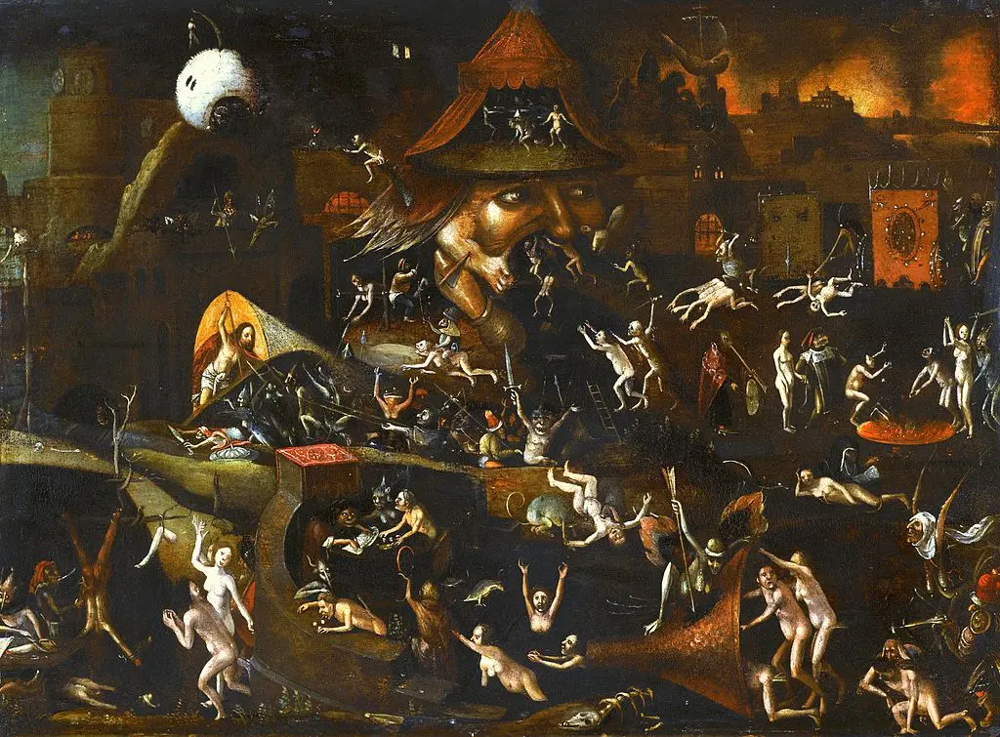
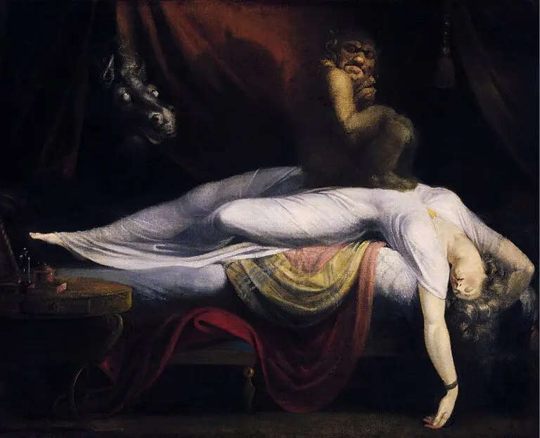
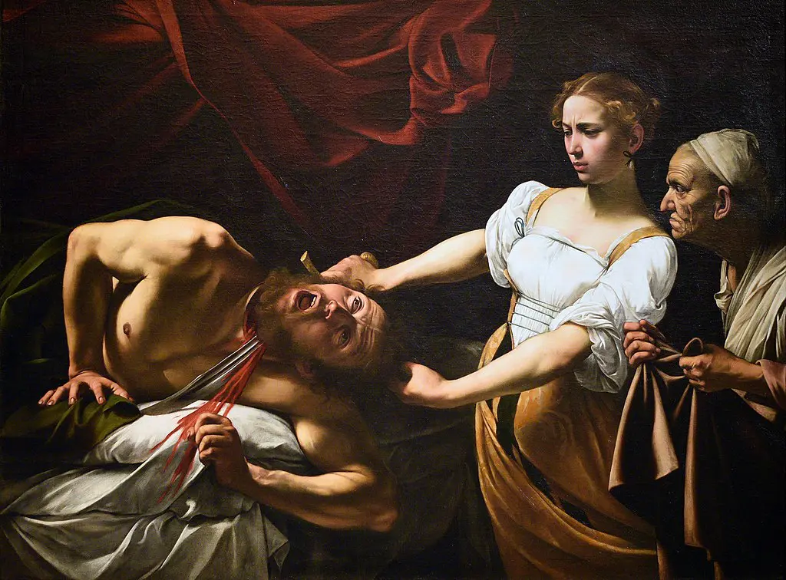

About dark paintings
Some of the most notable paintings ever created have been done around the subject of that which humans consider to be darkness.
This element of darkness is representative of evil as this metaphor seems to translate throughout any culture and language barrier in existence. Many of the most celebrated painters throughout history have dabbled in themes of darkness and evil at some point in their careers.
According to some of the most prominent art critics and historians, elements of darkness are seemingly unavoidable for painters who truly explore their own ability to express their innermost thoughts. The main reason for this is that darkness and evil seems to lurk in every corner of our existence.
Hell – Hieronymus Bosch
Few artists have delved into the terrifying beliefs and imaginations of what the idea of hell represents. Hieronymus Bosch, a painter from the Renaissance period, is one such artist who created a series of works on the subject of the afterlife, one of which is one of the most famous dark paintings ever done. Hell was created around 1490 and was one of the first paintings ever created that truly focused on the idea of the damned and the prospect of an eternity in torment. This painting wasn’t necessarily packed with detail, but features a few elements that highlight the sinister nature of the idea which hell represents to those who are religious or not.
The Nightmare – Henry Fuseli
This demon painting is titled The Nightmare and features a dark, sinister scene that many have said to be able to relate to. The 1781 painting portrays a sleeping woman sprawled across a bed, her arms hanging down to the floor as if she is in a very deep state of rest. The woman’s slumber is seemingly being disrupted by a demonic creature that is perched atop her chest.
Doctors have actually documented many such instances in which patients claim to be almost fully awake during the night, only to have some sort of demonic or evil presence sitting or pressing down on their chest, nearly suffocating them.
This is likely the source of inspiration that Fuseli had for creating this work and is part of why it is included in our list of the most famous dark paintings ever created.
Judith Beheading Holofernes – Caravaggio
Caravaggio was famous for his ability to produce paintings that emphasized the difference in light and darkness, which very clearly indicate good and evil throughout many of his most notable paintings.
In 1599, he finished one of his most distinct works ever that the artist titled Judith Beheading Holofernes. The painting is based on the Old Testament story of Judith killing the Assyrian ruler after she manages to lure him into a sense of comfort.
The painting was hailed for its intense level of detail in every minute aspect, from the expression on the face of Judith, as well as that of Holofernes as he is seen writhing in pain.